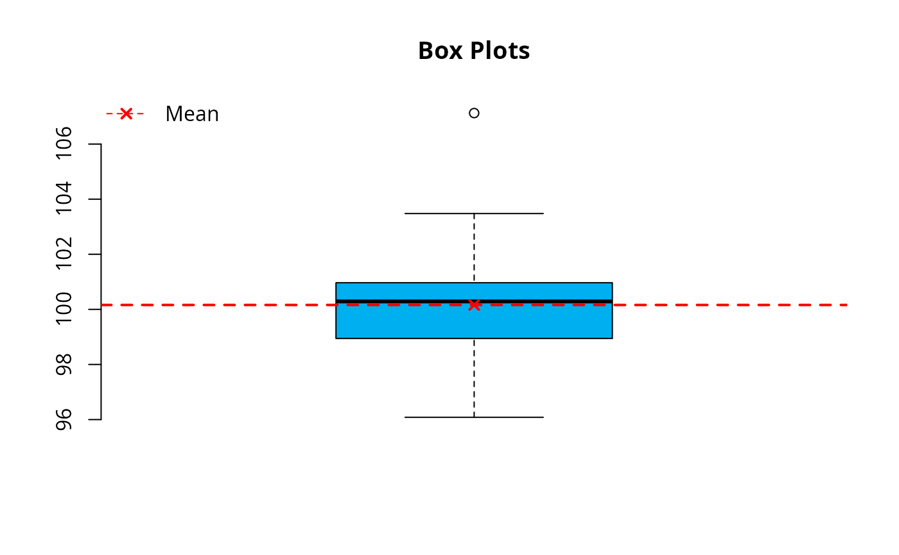
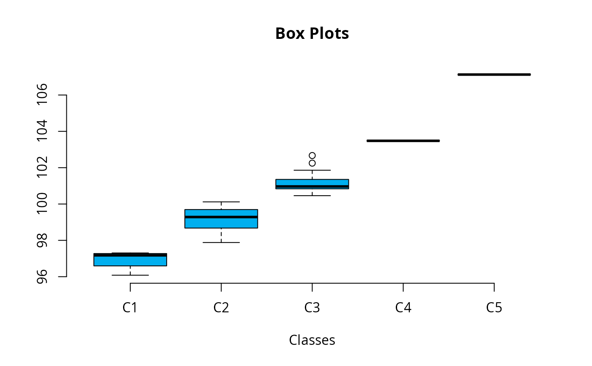

Produce box-and-whisker plot(s) of leem class object and computes the necessary values for the development of the plot.
Arguments
- x
R object (list) of class leem. Use
new_leem()function.- type
character argument. Default is
rawdata. Iftype = "classes", the function returns a boxplot plot for each set of data grouped of classes ofxobject.- details
Logical argument. Default is
FALSE, otherwise, in addition to the plot, the measurements necessary for the development of the plot will be displayed on the console.- horizontal
Logical argument indicating if the boxplots should be horizontal; default
FALSEmeans vertical boxes.- coef
this determines how far the plot whiskers extend out from the box. If
coefis positive, the whiskers extend to the most extreme data point which is no more thancoeftimes the interquartile range from the box. A value of zero causes the whiskers to extend to the data extremes.- main
Title name. Defaults is
NULL.- xlab
a label for the
xaxis. Defaults isNULL.- ylab
a label for the
yaxis. Defaults isNULL.- col
Character vector. Default
col = rgb(0, 175, 239, maxColorValue = 255).- ...
further arguments passed to or from other methods.
Examples
library(leem)
# Example 1
x <- rnorm(30, 100, 2) |>
new_leem(variable = 2) |>
tabfreq()
boxplot(x, details = TRUE)

#> $stats
#> [1] 96.08133 98.94260 100.28825 100.96633 103.47796
#>
#> $n
#> [1] 30
#>
#> $conf
#> [1] 99.70447 100.87203
#>
#> $out
#> [1] 107.1251
#>
#> $iqr
#> [1] 2.02373
#>
#> $min
#> [1] 96.08133
#>
#> $max
#> [1] 99.03548
#>
#> $mean
#> [1] 100.16
#>
# Example 2
boxplot(x, type = "classes")
